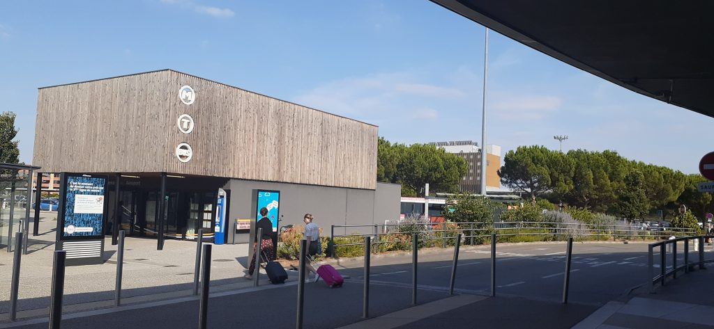
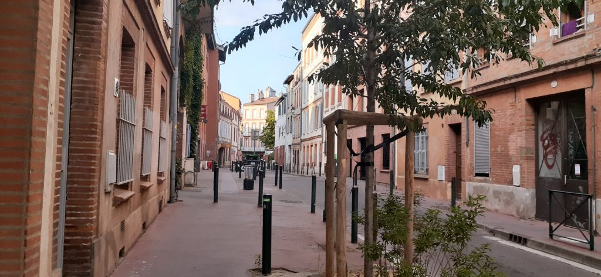
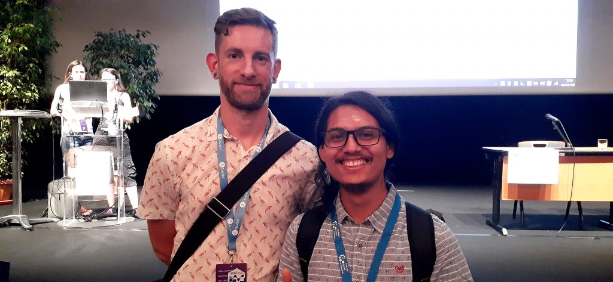
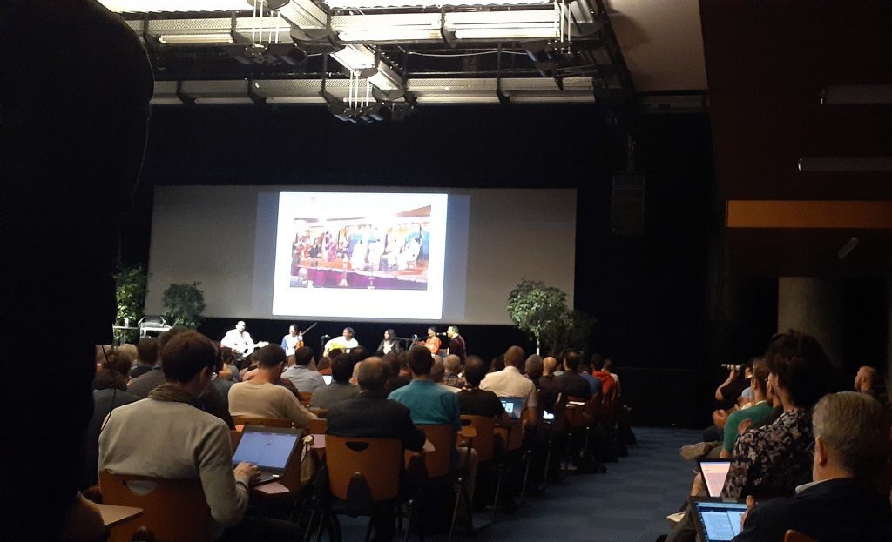
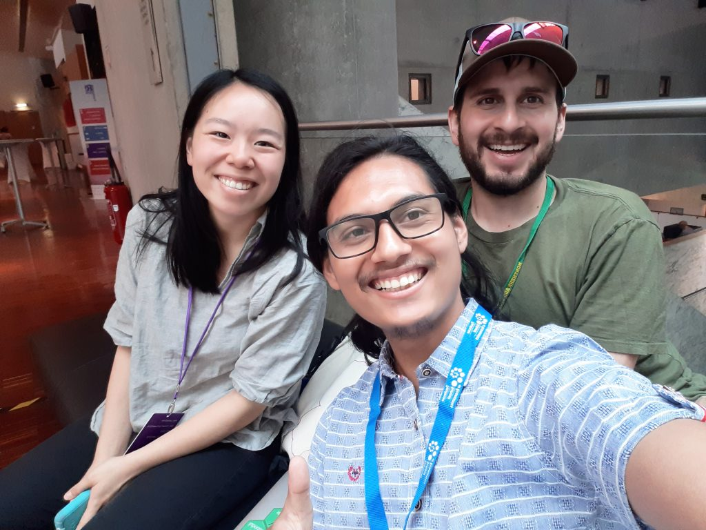
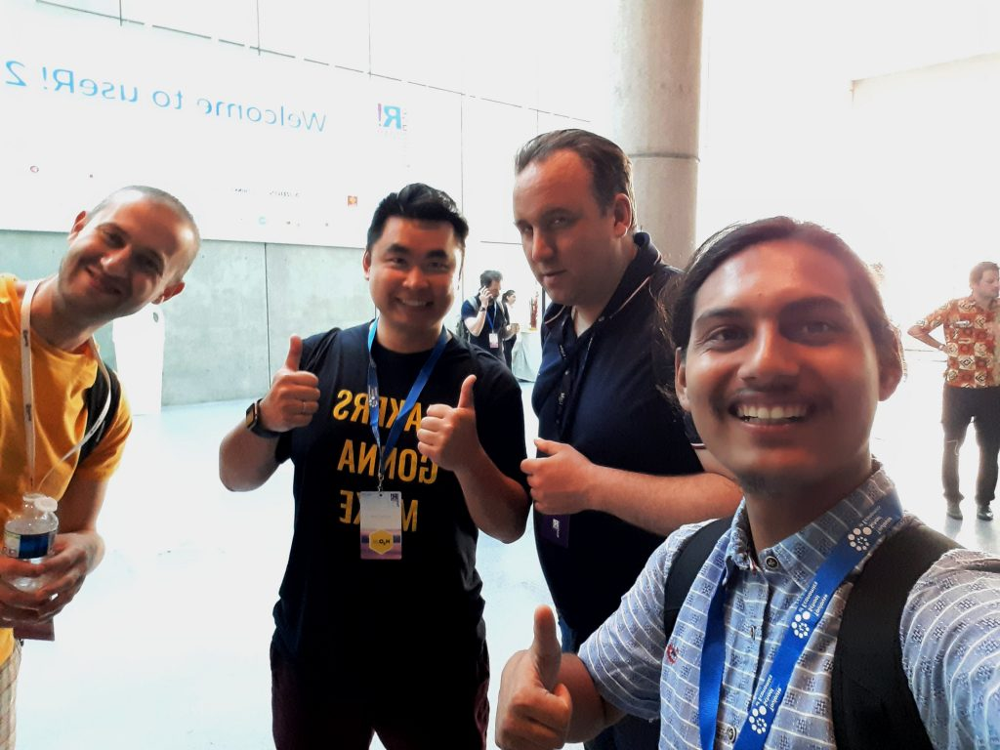
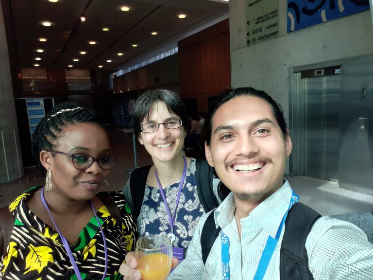
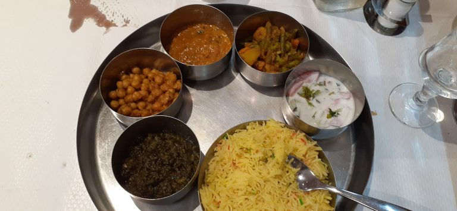

Here, I’m going to tell experience attending useR 2019 who is an undergrad student and travelled all the way from Nepal.
On the month of July, I attended the useR 2019 held at Toulouse, France
useR 2019 is an annual conference which brings R users, scientist, developers and communities together at one place.
On 7th July, I landed around 5:00 PM on Toulouse Blagnac Airport, France. It was a sunny and hot day.
My hotel was near the useR 2019 conference hall. I had two option to take the metro (long) or shuttle bus (short). I took the short one.

It took me around 15 mins to Compans Caffarelli (Subway station). Then, I went straight to my hotel for check-in and get some food.
Made a long ✈️ from Nepal to @UseR2019_Conf. My first ever R conference, so can't wait to see you all. Hope to see you some if you're already around. #useR2019 pic.twitter.com/tt60Wv1tQ3
— Binod Jung Bogati (@bjungbogati) July 8, 2019

At my hotel, it was great to find people who speak English. They’re from India, USA, France and we introduced ourself. I enjoyed talking with them but I missed to take a photo with them.
Next day, I went for Tidyverse Developer Day 2019 at the congress centre “Pierre Baudis”, the same venue as of useR 2019.
Tidyverse Dev Day has started. @UseR2019_Conf #useR2019 pic.twitter.com/1UMcjJY5KB
— Binod Jung Bogati (@bjungbogati) July 8, 2019
At Tidyverse Dev Day, I chose to work on the issue of the dplyr package. Unfortunately, I had to update the R version and re-install all necessary packages. It took me at least 2-3 hours to get it done. Finally, I managed to send my first pull request in dplyr and it got merged too.
At the evening, I joined the newbie sessions which had various talks and session.
Topics and speakers now fixed for the newcomers session at useR! (Monday 6-7pm, after social time, 4-6pm)
— useR! 2019 (@UseR2019_Conf) July 2, 2019
- Forwards @noatamir
- The R ecosystem @revodavid
- R User Groups @G_Devailly
- Contributing to the ecosystem @_ColinFay
- R ladies @hfcfrick @ledell pic.twitter.com/mTudY7IfFx
There was motivating talk like The R Ecosystem by David Smith, Cloud Advocate for Microsoft.
“I came for the software, but I stayed for the community” — @revodavid #useR2019 #rstats @UseR2019_Conf pic.twitter.com/2Wz1pMZ0CQ
— Max Held (@maxheld) July 8, 2019
Also, R-Ladies Global talk, how they managed to expand their local chapters to 159 cities starting right from 2016 useR conference.
It's great to find @RLadiesGlobal story how they started their journey and overview of their progress. @ledell @hfcfrick #Rladies pic.twitter.com/bzmA5LZvnt
— Binod Jung Bogati (@bjungbogati) July 8, 2019
It was a day for tutorials and attendees went for the tutorials they registered before.
I attended for Package development tutorials by Hadley Wickham, Jenny Brian, and Jim Hester.
Learning to make package in R. https://t.co/JYeLZ85YqI @JennyBryan @UseR2019_Conf #useR2019 #rstats pic.twitter.com/gzawOzbXUz
— Binod Jung Bogati (@bjungbogati) July 9, 2019
Right after the tutorials, I even managed to talk with Hadley Wickham (Chief Scientist at RStudio) about RStudio Education and future prospective.

Then, I met with Erin Ledell (R-Ladies Co-founder) and Joseph Richter(RStudio). I introduced them about R community Nepal and they told how the global community can help us grow.
@bjungbogati @ledell @UseR2019_Conf #useR2019 pic.twitter.com/GjXhU6tQaP
— Shel 🇰🇪 (@Shel_Kariuki) July 9, 2019
After the lunch break, it was time for the tutorial. I went for the Docker for Data Science by Tobias Verbeke (Managing Director at Open Analytics).
Docker for Data Science by Tobias Verbeke by @OpenAnalytics @UseR2019_Conf #rstats #useR2019 pic.twitter.com/0g19YJPcjM
— Binod Jung Bogati (@bjungbogati) July 9, 2019
After the 2nd tutorial, I met with the people including representatives of R Africa.
@romain_francois @Pisita11 @categitau_ @dragonflystats @bjungbogati @UseR2019_Conf #user2019 pic.twitter.com/5WbRytsGtT
— Shel 🇰🇪 (@Shel_Kariuki) July 9, 2019
At the evening (5 PM), we headed for the welcome reception at Capitole: City Hall of Toulouse. We reached the place after 10 mins walk from the conference hall.
Lots of people were there at Capitole - Toulouse City Hall. @UseR2019_Conf #rstats #useR2019 pic.twitter.com/TjaXda41BH
— Binod Jung Bogati (@bjungbogati) July 10, 2019
Great Hall inside the Capitole - Toulouse City Hall. @UseR2019_Conf #useR2019 pic.twitter.com/UosiPqVr2j
— Binod Jung Bogati (@bjungbogati) July 10, 2019
The conference started with the beautiful music full of peace and kindness by Ali Alaoui & Moultaqa Salam.

After sponsors talk of R-Consortium, it was time for Keynote talk.
Julia Stewart Lowndes (Marine Data Scientist at NCEAS) gave a keynote on R for Data Science in Less time. She shared her story of how she used the R ecosystem at her work and it inspired me a lot.
R and its community is power for scientist to make their work better in less time. @juliesquid @UseR2019_Conf #useR2019 #rstats pic.twitter.com/jIrIBveBdd
— Binod Jung Bogati (@bjungbogati) July 10, 2019
First, I met her at Tidyverse Dev Day, we’re at the same table. She was looking at my laptop stickers and asked me if I can help her make Xaringan work offline and I agreed to help her. Then, I realized she was a keynote speaker for the next day.
After Julia’s keynote talk, we had a coffee break. Then, I joined the Enhancements to data tidying by Hadley Wickham, n() things about dplyr by Romain Francois and golem package for shiny app development for production by Vincent Guyader and followed various talks that day.
Use Golem: package for Building robust Shiny app for production @VincentGuyader. @UseR2019_Conf #useR2019 #rstats pic.twitter.com/b7Uxvyn8bd
— Binod Jung Bogati (@bjungbogati) July 10, 2019
During the break, Angela introduced me to Christopher, who is the lead organizer of useR2020 and we talked for a while. And attended a few more talks.

After the conference, we’re ready for the most awaited Gala Dinner at Cité l’espace.

We were all waiting for the bus for Cité l’espace which is Europeans premier astronomy and space science culture centre. It is a unique and lively place for sharing space adventures.
Cité l'espace is fantastic place to be @UseR2019_Conf #useR2019 pic.twitter.com/nApapjgg2s
— Binod Jung Bogati (@bjungbogati) July 11, 2019
Next day started with Joe Cheng’s (co-founder of RStudio) keynote on Shiny Holygrails which focuses on interactivity and reproducibility. I happened to talk with him a day before, who is well known in the community for his Shiny package.
After some break, I went mostly for community talk. Since I also had a lightning talk i.e building active community (in Nepal).
It was a pleasure meeting these amazing co-speakers from the Saint-Exupéry session.
— Alimi Eyitayo🌷#LeadDevLive (@alimieyitayo) July 11, 2019
Thank you for all you do for the love of open knowledge. 😘@UseR2019_Conf #useR2019 pic.twitter.com/5ZcsMXZwYm
Also, I’m pleased to hear Shel giving talk about AfricaR. It was filled with motivating, clear vision & determination.
AfricaR is at #useR2019 ! pic.twitter.com/BOHw8dfJjW
— useR! 2019 (@UseR2019_Conf) July 11, 2019
I also enjoyed the panel discussion: The truth about satRdays. Personally, I did talk with them about their experience of hosting satRdays. I got motivated to organize, satRday Kathmandu soon. I enjoyed the keynote talk of Martin Morgan, core contributor of Bioconductor.
Martin Morgan live code on his key note @UseR2019_Conf #rstats #useR2019 pic.twitter.com/70pAdHp5Zt
— Binod Jung Bogati (@bjungbogati) July 11, 2019
Not to miss result of ThinkR quiz.
Result of quiz of @thinkR_fr @UseR2019_Conf #useR2019 #rstats pic.twitter.com/KYvgvfinDw
— Binod Jung Bogati (@bjungbogati) July 11, 2019
Next for the evening, was the flash poster session. It was fun-filled because everyone had 30 sec to speak and some people missed theirs.
A bit of #AsiaR #useR2019 @bjungbogati @flaty13 @UseR2019_Conf pic.twitter.com/cbZPPl1cpn
— Jaynal Abedin PhD (@jaynal83) July 11, 2019
I had nice time talking with Heather Turner, R-Foundation member and Shel representing AfricaR.

There were lots of posters from industries, researchers and PhD candidates from different universities.
Poster Session happening @UseR2019_Conf #useR2019 #rstats pic.twitter.com/FoxwOh7mxR
— Binod Jung Bogati (@bjungbogati) July 11, 2019
At evening, I managed time to see the sunset view from Toulouse, riverside.
Sunset view from Toulouse @UseR2019_Conf #useR2019 pic.twitter.com/3zEN7syM6u
— Binod Jung Bogati (@bjungbogati) July 12, 2019
I amazed to see pink building and know fact that Toulouse is called Pink City.
While heading back for dinner, I clicked the night view of Capitole de Toulouse.
Night view of Capitole de Toulouse @UseR2019_Conf #useR2019 pic.twitter.com/W54UzuCHpD
— Binod Jung Bogati (@bjungbogati) July 12, 2019
Since five days, I have been eating raw veg (food) and soup with weird taste. I couldn’t resist going to Indian restaurant for Veg Thali (South Asian Dish).

On the day 4th, I only attended a few talks because I need to catch a train for Paris. No worry, all the talks were recorded along with their slides. I really missed the last day’s R community meetings, keynotes, and crazy people.